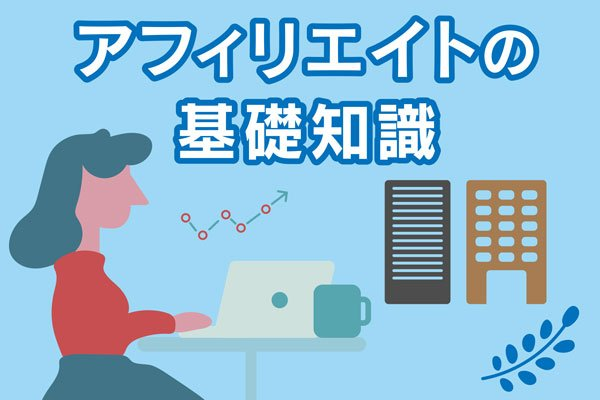
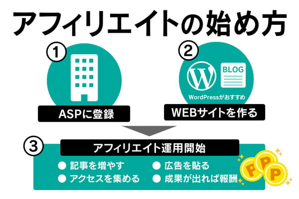
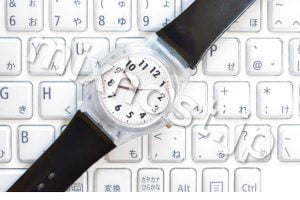
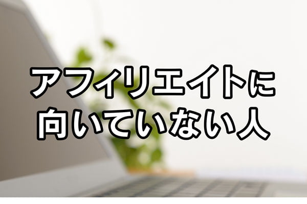

こんにちは！当コラム担当の高原です！専業アフィリエイター歴8年で、SEO集客のコンサルティング、ホームページ制作の会社も経営しています。
Twitter（@Koshiro_Taka）でも役立つ情報をつぶやきますので、よかったらぜひフォローしてくださいね^^
この記事では、直近3年のアフィリエイト報酬が1億円を超えている僕が、
”アフィリエイト”とはなんだ？という疑問を
誰でもわかるように、わかりやすく解説します！
↓この記事の内容は動画でも解説しています↓
インターネットを使った副業として、現在は多くの方に認知されているのが「アフィリエイト」です。
なにより最大の魅力は、どんなビジネスよりも低予算で始められること。
他のネットビジネスより優れている点も多い。
- youtubeは編集技術が必要（外注するなら編集代）
- 物販系（せどり・転売）は仕入れ予算と赤字リスクがある
その点、アフィリエイトは難しい技術は不要。
しかもお金をかけずにスタートできる素晴らしいビジネスです。

2010年ごろまでは怪しいイメージもあったアフィリエイトですが、
現在は市場も大きく広がり一大産業となっています。
（2019年時点で市場規模3000億円：ミック経済研究所の市場調査）
参考：https://markezine.jp/article/detail/31790
私も仕事柄、実際にやられている方を多数みていますが、月5万円くらいの美味しい副業にしている方は、星の数ほど存在し、
- 月100万円以上稼ぐ方
- それ以上稼いで起業している方
も数えきれないほど増えている時代になりました。
【この記事では】
- アフィリエイトの意味
- アフィリエイトに関する基礎知識
- アフィリエイトに向いていない人
- アフィリエイトの具体的な仕組み
- 最低限知っておきたい専門用語
- アフィリエイトの始め方
といった基本ついて、徹底解説します。
この記事を読めば、アフィリエイトが何なのか…
よくわからない方も、しっかり理解することができます！
この記事では「アフィリエイトとは？」という全体像について解説します。
アフィリエイトの具体的な始め方を知りたい方は下記の記事に進んでください。
この記事を読むことから、あなたの副業収益の第一歩が始まるので、ぜひ読んでみてください。


目次
アフィリエイトの基礎知識！意味と仕組みを理解しよう
まず最初に知っておきたい、アフィリエイトはどのように成り立っているのか
という点ですね。
アフィリエイトの基礎知識として、まずは
アフィリエイトの意味と仕組み
から理解していきましょう。
アフィリエイトとは！意味を理解しよう
アフィリエイトとは何かというと、
成果報酬型の広告収入
の事を言います。
- Webサイト（ブログやホームページ）に広告主である企業の商品・サービスを紹介する。
- 読者さんがそのまま飛べるように、その商品やサービスのURLを貼っておく。
- 読者さんがそこから飛んで企業のページに行って購入する
すると、あなたに紹介料が入るという仕組みです。
これがアフィリエイト報酬です。
フルコミットの営業マンに似ていて、
- １件契約が取れたら○円
- とれなかったらゼロ
っていうシンプルな仕組みです。
アフィリエイトの仕組み
アフィリエイトをする上でまずは簡単な「アフィリエイトの仕組み」について知っておきましょう。
アフィリエイトは「企業」「ASP」「アフィリエイター」「ユーザー」の4つの関係で成り立っています。

ユーザー（購入者）
ユーザーとはアフィリエイターがブログやホームページなどで紹介した商品を購入する「購入者」の事。
要はあなたのサイト（ブログ）で商品を購入してくれた読者さんです。
購入者が商品を買うことで企業・ASP・アフィリエイターにそれぞれ報酬が分配されるようになります。
企業（広告主）
企業とは自社の商品・サービスの広告を打ち出す「広告主」の事です。
有名な企業がアフィリエイトに参加し、広告を打ち出しています。
参加している企業のジャンルは
アフィリエイトが行われているジャンル
- 飲食
- 美容
- 健康
- ファッション
- インターネット関連
※主要なもの（ごく一部のみ）
などなど、数えきれないほどのジャンルがあります。
ASP（広告の紹介会社）
ASPとは「アフィリエイト・サービス・プロバイダ」の略で、企業とあなたの「仲介業者」の役割を果たします。
ASPの存在により、個人でも大企業の商品を扱う事が可能となります。
アフィリエイター（紹介者）
アフィリエイターはWebサイト（ブログやホームページ）でアフィリエイト広告（商品）を紹介する「紹介者」の事を指します。
アフィリエイト広告はASPから選ぶことができます。
なので、ASPへの登録が必須となります。
ASPに登録すると、こんな感じで扱う広告を選ぶことができます。
ここで提携ボタンを押すと、あなた用のURLが発行されます。
【ASPの提携画面の例】

提携して発行されるURLはあなた専用のものです。
これによって企業（広告主側）は、誰が商品を紹介したのかが分かる仕組みになっています。
広告主はURLで誰の紹介かを判別して、ASPに手数料を入金します。
するとASPがアフィリエイターの銀行口座に「アフィリエイト報酬」を入金する
と言う仕組みになっています。
アフィリエイト報酬＝アフィリエイターが貰う”紹介料”
アフィリエイトとは成果報酬型の広告収入
企業・ASP・アフィリエイター・ユーザーの関係で成り立つビジネス
アフィリエイトの始め方
アフィリエイトは無料で始める事が出来ます。
必要な工程は大きく分けて２つだけ。
- Webサイト作成
- ASPに登録
- ASPで広告主と提携する
→専用のURL（アフィリエイトリンク）をもらう
ここからはアフィリエイトを始めるための手順をご紹介します。
ここでは概要のみを解説しています！
実際にやってみたい方は、下記の記事に進んでください！
- ジャンル選定
- サイト構築
- ライティング
について理解できるようになります。
すぐにでもスタートできる状態になりますので、ぜひ！
1.Webサイト作成
まずはアフィリエイト広告を掲載するための「Webサイト」の準備をしましょう。
ここで１つ注意点があります。
初心者は「ライブドアブログ」や「はてなブログ」などの「無料ブログ」を開設するやり方でスタートしがちですが、これはお勧めできません。
確かに下記のような無料ブログは「商用可」という事が規約に書かれていて、アフィリエイトをすることが可能です。
| アフィリエイト可能な無料ブログ | |
|---|---|
| 商用可のおすすめ無料ブログ | 特徴 |
| ライブドアブログ | 独自ドメインが使える サブドメイン形式のブログURL |
| はてなブログ | はてなブックマークが集めやすい |
| アメブロ | 2018年から商用可（ASP・ECサイトに限定） |
| Blogger（ブロガー） | 独自ドメインが使える 広告が表示されない |
| So-netブログ | 広告の非表示が可能 |
ただ、これらのブログサービスは、運営側の都合でサービスが終了する可能性があります。
その時は、あなたのサイトが強制的に閉鎖になるので、実際にアフィリエイトで収益を上げるために使うのはお勧めできません。
実際に、2019年にYahoo! ブログのサービス終了で、それまで育てていたサイトが無くなってしまい稼げなくなってしまった方がたくさんいらっしゃいます。
Yahoo!ほどの大手サービスでも終了の可能性があるので、必ずWordPress（WordPress）を使ってサイト運営を行いましょう。
稼いでいる方の大半がWordPressを使ってサイト運営をしています。
しかもWordPressでのサイト運営はあなただけのレンタルサーバーとドメインを借りての「ホームページ」になります。
つまり、無料ブログと違い、掲載の制限を受けることなくアフィリエイトが可能です。
WordPressでのサイト開設に関しては、最も簡単なやり方を下記の記事で解説しています。
- サーバーって何？
- ドメインって何？
という超初心者でも5分でWordPressでのサイトを開設できますので、まずはここから始めてみてください。
また、Webサイトを用意したら、まずは「1～2記事前後の記事投稿」して準備してみましょう。
理由はASPには簡単な審査があるため、アフィリエイトをする意志を伝えるため。
これをしておくと「文章力」や「セールス力」が評価され、ASPの審査に通過しやすくなるからです。
無料ブログでのアフィリエイトは非推奨
レンタルサーバーとドメインを借りての「ホームページ」運営を始めよう！
2.ASPに登録
Webサイトと記事を用意したら、ASPに登録をしましょう。
有名所だと「A8.net」や「バリューコマース」などがあります。
また、「楽天アフィリエイト」や「Amazonアソシエイト」などもASPに含まれます。
| 主なASPと特徴 | |
|---|---|
| 有名なASP | 特徴 |
| A8.net | 1番ユーザーが多いASP、広告の数が多い |
| Afb | 管理画面が使いやすい、詳細なレポート |
| バリューコマース | 日本初のASP、アメブロと提携 |
| 楽天アフィリエイト | 楽天の商品が紹介できる |
| Amazonアソシエイト | Amazonの商品が紹介できる |
ASPにもそれぞれ特徴があり、取り扱っている商品が違います。
登録に関しては無料なので、
どのような商品を取り扱っているのか？
を知るために色んなASPに出来るだけ多く登録するのが良いです。
【とりあえずASPは全て登録しておこう！】
ASPは最初は、１つから始める…という初心者の方が多いですが、
それは間違いです。
ASPによって、
- 得意（案件が多い）ジャンルが異なる
- 各ASPが独自に有益な情報を発信している
- ASP主催の勉強会などに参加できる
- ASP登録者が使えるお得なサービスがある
そして…
登録だけならタダ！
メリットはあっても、デメリットはありません。
なので、始めた時点で可能な限り多くのASPに登録するべきです。
ひとまず上記の主要ASPは登録しておくことを強くおすすめします。

どのASPに登録すべきか悩んでいる…という方は下記の記事をご覧ください。
成果報酬型広告を取り扱っているASPの中から、特に初心者におすすめの6社を紹介しています。

3.ASPから広告を選ぶ
ASPに登録を完了したら、
Webサイトで紹介する広告を選んでみましょう。
ASPには様々なジャンルの広告が登録されています。
| ASPにある主要な広告ジャンル | |
|---|---|
| 広告ジャンル | 商品の具体例 |
| 飲食 | 飲食通販、お店の予約、定期宅配サービス |
| 美容 | 化粧品、エステ・サロン、サプリメント |
| 健康 | サプリメント、健康器具、スポーツグッズ |
| ファッション | 洋服通販、アクセサリー |
| 旅行 | 航空券、ホテル予約、国内・国外ツアー |
| インターネット関連 | レンタルサーバー・ドメイン、光回線、Wi-Fi、動画配信サービス |
| 金融 | 銀行口座、証券会社、FX、クレジットカード |
ASPには商品も多く用意されていますので、自分がWebサイトで紹介できる知識や経験があるものから紹介してくと良いです。
そして、慣れてきたら気になる商品を試しながら、その結果をブログで紹介するなどすると、ユーザーにも評価されて売れやすくなります。
まずは自分がWebサイトで紹介できる案件を選ぶ。
知識や経験があるものを選ぶのが成功の鍵！
4.Webサイトに広告を掲載する
ASPから広告を選んだら、用意したWebサイトに広告を掲載しましょう。
出来る限り商品に関する「体験談（経験）」を書くのがベターです。
それが無理な場合は
- 商品の詳細
- 予備知識
- 口コミ
などを分かりやすく書くのが基本です。
他のWebサイトを参考にするのも良いですが、あまりに同じだと「コピペ（コピー&ペースト）」をしたと検索エンジンに評価され、Webサイトが上位表示しなくなります。
あくまで自分の言葉、自分の気持ちを込めての
オリジナリティを重視する
事が大切です。
広告を掲載する際は「体験談（経験）」を書く
商品の詳細、予備知識、口コミを書くのが基本
アフィリエイトに向いている人
ここまででアフィリエイトの基本情報や仕組み、始め方などをご紹介しましたが、アフィリエイトに向いている人とはどんな方なのでしょうか。
ここでは、
アフィリエイトに向いている人の3つの特徴
をご紹介します。
1.即行動できる人
アフィリエイトで稼げる人を見ていて完全に共通しているのは「即行動できる」という点です。
アフィリエイトは非常に奥が深いため「すべてを学んでから始めよう」という考え方は、いつまでも情報収集に時間をかけてしまいます。
これでは肝心のサイト運営にかける時間が短くなってしまう為、結局稼げない…という方が非常に多いです。
逆に今わかる範囲でまずは行動してみるという考え方で動いている方は、作業量が多いため、すぐに稼げるようになる傾向にあります。
この記事を読んでいるあなたも、まずは第一歩を今スグに行動することをおすすめします。
まずはブログ・サイトを開設する作業からなので、下記の記事を読んでまずはスタートラインに立ってみてください。
今動ける人はすぐに稼げるようになる人です。
1.商品知識がある人
アフィリエイトは「商品紹介」のビジネスになりますので、各商品に関する予備知識が必要になります。
なぜなら、あまり商品に詳しくない人に紹介されたとしても、誰も欲しくならないからです。
ですので、ブログやホームページなどのWebサイトには
- 自分の商品を使った体験談
- 同じジャンルの商品を比較したランキング
などが求められます。
また、アフィリエイトの購入者はスマホ利用者が多く、女性も多いため「共感力」が求められます。
2.「情報発信」が好きな人
アフィリエイトはWebサイトに「文章」として記事作成するのが基本です。
ツイッターやインスタグラムなどの「SNS（ソーシャル・ネットワーキング・サービス）」で紹介する事も可能です。
そのため情報発信が好きな方がアフィリエイトをする事が多いです。
その情報発信の多くの経験が「文章力」や「セールス力」に繋がってきます。
アフィリエイトはSNSを使う事でブログやホームページへのアクセスを集める事も大切になってきています。
3.時間を掛けられる人
アフィリエイトは
- 転売
- ユーチューバー
などの副業と比べても、
資金が少なく始められるネットビジネス
になります。
しかし、どの副業でもそうですが、ある程度の時間をかける必要があります。
具体的には半年や1年などのWebサイト運営で100記事規模の記事作成が求められます。
その間はアルバイトよりも稼げないという期間になりますので、その経験を積める人が向いていると言えます。
アフィリエイトに向いている人
- 商品知識がある方
- 情報発信が好きな方
- ある程度の時間をかけられる方
アフィリエイトに向いていない人
アフィリエイトに向いている人を紹介しましたが、その逆の向いていない人も当然ながら存在します。
ここではアフィリエイトに向いていない人の2つの特徴をご紹介します。
1.即行動を起こせない人
先ほども述べた通り、アフィリエイトで稼げる人の共通点は、とにかく「即行動」できるという点です。
アフィリエイトに興味ガある方はたくさん見てきましたが、悩む時間が多く、行動が遅い方は残念ながら稼げない典型的なパターンです。
2.紹介したい商品がない人
あまり商品を買わない人や紹介したい商品が全く無いという方はアフィリエイトには向いていません。
そのような方は、もしかしたら転売やユーチューバー、スキル販売などの副業の方が向いているかもしれません。
それでもアフィリエイトで稼ぎたい、稼いでみたいという場合は、何かしらの「自分がおすすめできる商品」を見つける必要があります。
そのためにも多くのASPに登録してみると良いでしょう。
3.Webサービス全般に疎い人
ブログやホームページへの開設が出来ない、SNSは全くやらないなどの「Webサービス全般に疎い人」はアフィリエイトには向いていません。
やはり、アフィリエイトは現在でもブログやホームページを使った「記事作成」が主流です。
また、ツイッターやインスタグラムなどのSNSを使う事も、最近のSEO（検索エンジン最適化）にはアクセスを集めるために必要だと言われています。
アフィリエイトを始める場合は様々なWebサービスを使いこなす覚悟が必要になります。
アフィリエイトに向いていない人
- あまり商品を買わない方
- 紹介したい商品が全く無い方
- Webサービス全般に疎い方
まとめ
以上がアフィリエイトの基本情報と簡単な仕組み、アフィリエイトの手順、向いている人・向いていない人になります。
アフィリエイトは簡単に始められますが、奥が深くやることも多いので、行動が遅い方は稼げない傾向が強いです。
ですので、即行動が最も大切。
まずは、
- あなたのサイトを開設してみる
- ASPに登録し、アフィリエイトで掲載できる広告（商品）を見てみる
ことから始める事をおすすめします。
それを踏まえてアフィリエイトを簡単な方法からぜひチャレンジしてみて下さい。
最も簡単で早いサイトの開設方法を下記でご紹介しています。
まずはこの記事を読むところからアフィリエイトライフをスタートしてみましょう！